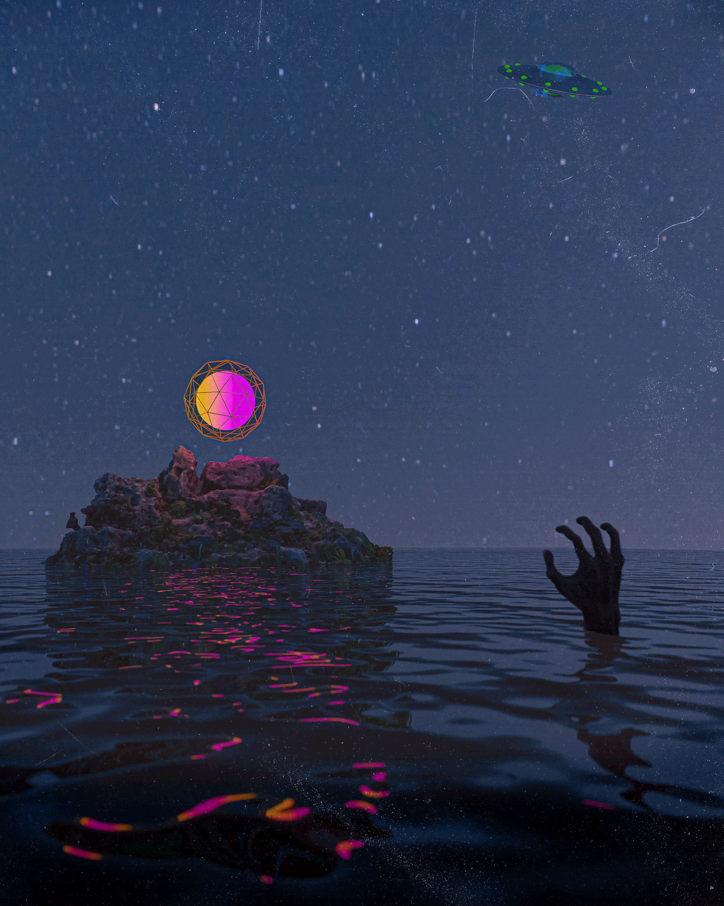

Imaginary Friends
3D environment and storytelling scene exploring scale, tension, and childhood imagination through a surreal forest encounter.
A tight first cut of the work, split cleanly between personal art, design work, and AI-native systems building.
All personal 3D environmental and storytelling artwork shown in this section was created by Terrence Chandler (T Focus) and was not AI-assisted.
3D environment and storytelling scene exploring scale, tension, and childhood imagination through a surreal forest encounter.

Atmospheric 3D narrative piece centered on silhouette, mystery, and spiritual transformation within a stylized shrine landscape.

Concept-driven 3D scene combining ruins, surreal technology, and symbolic storytelling to create a worldbuilding-focused visual moment.

Cinematic environmental composition using negative space, reflection, and surreal focal points to tell a near-reach narrative.
Brand exploration, apparel concepts, and presentation-driven design work built to communicate product intent clearly.

Front and back apparel concept exploring brand identity, embroidered placement, and symbolic graphic storytelling across a wearable design system.

Technical apparel concept showing silhouette development, colorway planning, and product-oriented presentation for a branded garment line.
Practical AI-assisted systems work connecting planning, production, design, and execution.
Multi-agent creative workflow system built to support writing, research, planning, design, and production through structured AI-assisted collaboration.
Creative automation and digital product development work spanning offer structure, documentation, workflow design, and web-facing business assets.
Active AI model training and evaluation work supporting visual content tasks, structured output ranking, annotation, and quality review for generative AI research and development.
Practical systems work across prompting, documentation, tool chaining, Python scripting, and AI-assisted production pipelines for creative and operational use.
I’m Terrence Chandler, also known as T Focus. My work sits at the intersection of visual design, 3D art, AI-assisted workflows, and creative systems building. I’m especially interested in opportunities that blend digital media, structured problem-solving, and modern tool fluency, whether that means visual content, AI training, design support, or creative automation.
Blender, Maya
Adobe Illustrator, Photoshop, GIMP, Krita, Inkscape, Photopea
OpenClaw, Claude Code, Codex, ChatGPT, Claude, Gemini, Kimi 2.5, MiniMax, Qwen Code, multi-agent workflows, AI workflow design
Python scripting, API wiring, GitHub, website building, Netlify, automation setup